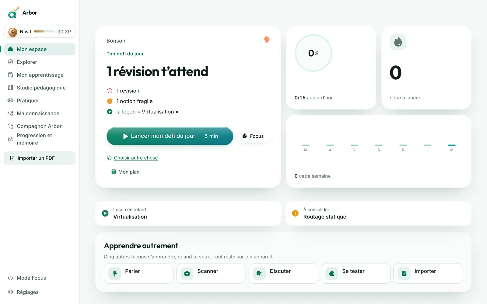
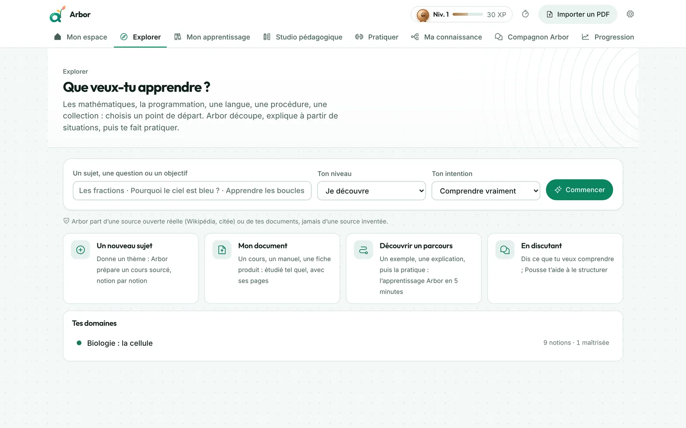
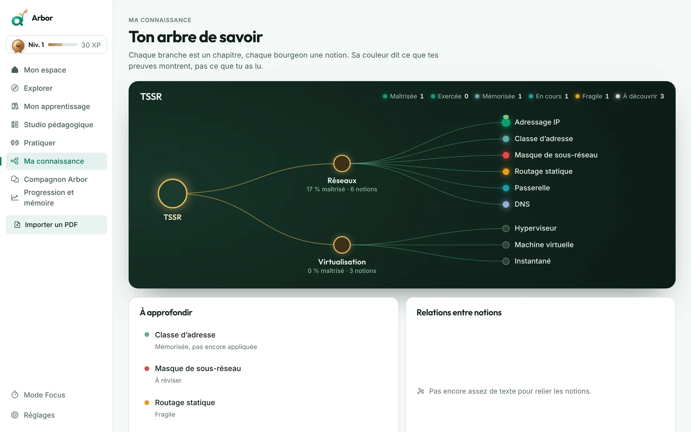
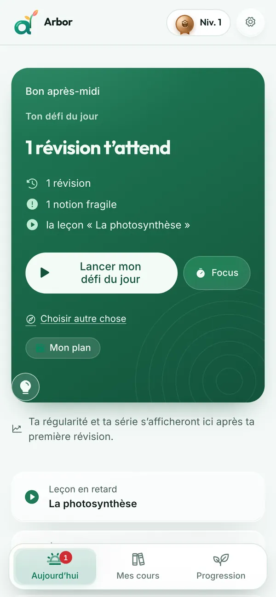
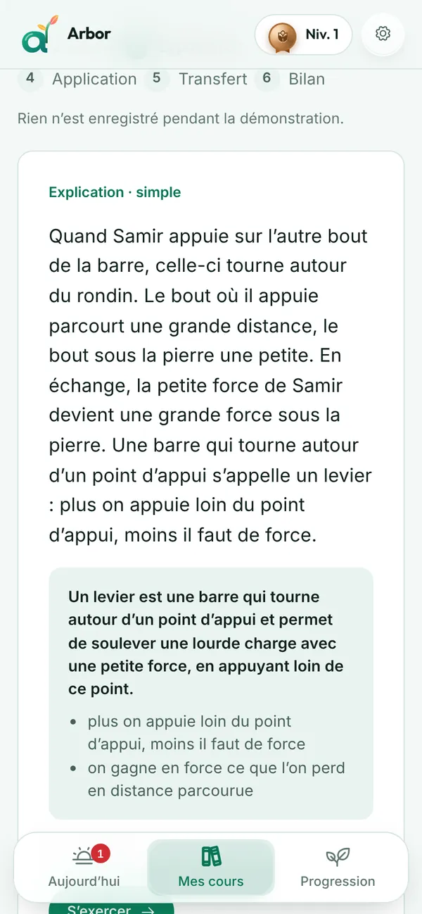
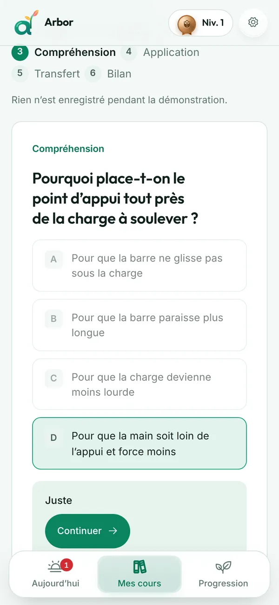
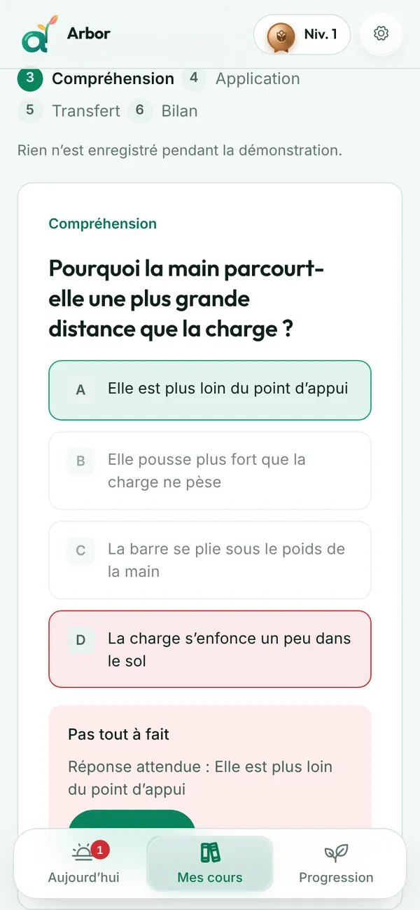
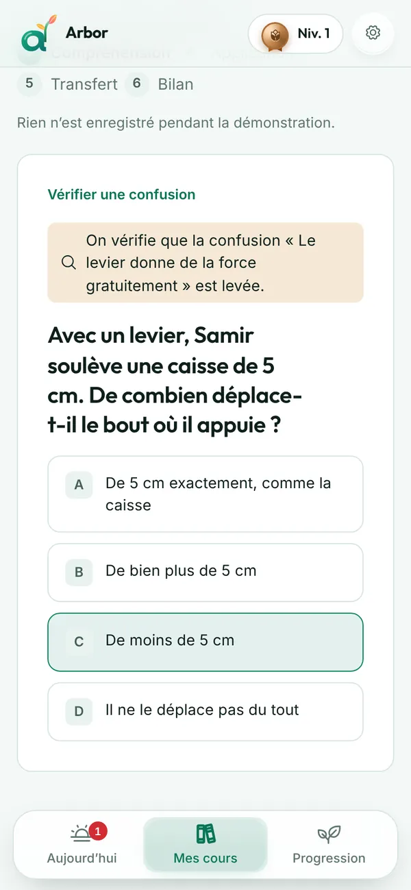
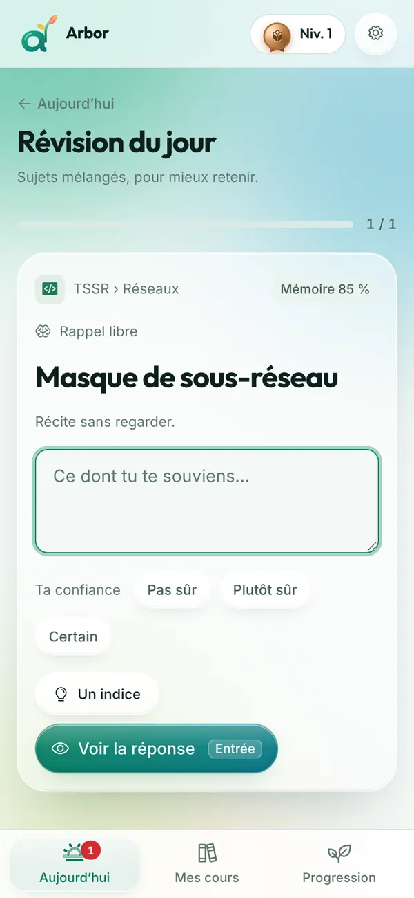

Un levier est un solide (ordinairement une barre rigide) mobile autour d’un axe ou d’un point d’appui, permettant de multiplier une force.
Extrait retrouvé mot pour mot
Exemple : le passage vient de ta source, avec son titre, son lien et sa licence.
Un sujet, une question ou un document deviennent un parcours qui part d’un exemple et se révise au bon moment.


Sur le Web sans rien installer
Windows et macOS dans sa propre fenêtre
Sur téléphone depuis le navigateur
Apprendre seul est gratuit, Business est facturé : tarifs
Le même compte et le même moteur. Chaque surface est dessinée pour la façon dont on l’utilise.
Lumineux et éditorial : commencer tout de suite, partager un parcours par un lien, administrer son organisation.
Ouvrir Arbor Web
Un atelier : barre latérale, raccourcis Ctrl+1 à 8, rappels de révision natifs.
Télécharger
Tactile : la carte du jour, cinq minutes de révision, le compagnon dans la poche.
L’installer
Synchronisation entre appareils : en préparation. Aujourd’hui, ton apprentissage personnel reste sur l’appareil où tu apprends ; une sauvegarde le fait passer d’un appareil à l’autre. La synchronisation automatique, chiffrée et facultative, est en préparation. Les espaces d’organisation sont déjà en ligne, sur tous les supports.
Le levier, tel qu’on le traverse sur téléphone. Rien à deviner : l’exemple d’abord, la pratique ensuite, la mémoire pour finir.
Samir déplace une pierre avec une barre. Le cas est montré tel quel, rien à deviner : tu dis seulement si tu découvres la notion ou si tu as déjà des bases.
Formulée pour ton niveau, appuyée sur une source. Si tu découvres, un exemple résolu pas à pas suit, avant tout exercice.

Des questions de formes variées, qui obligent à se servir de la notion plutôt qu’à la réciter.

Une erreur n’est pas juste notée fausse : Arbor montre la réponse attendue et cherche la confusion qui l’explique.

Si l’idée fausse revient, Arbor la nomme et la travaille avec un cas ciblé, jusqu’à ce qu’elle tombe.

La notion revient au moment où tu allais l’oublier. Cinq minutes par jour suffisent.

Chaque branche est un chapitre, chaque nœud une notion. Il se remplit seulement quand tu as prouvé que tu la maîtrises : rien ne se coche à la main.
Chaque extrait cité est retrouvé mot pour mot dans ta source. Sinon, Arbor le dit.
Un levier est un solide (ordinairement une barre rigide) mobile autour d’un axe ou d’un point d’appui, permettant de multiplier une force.
Extrait retrouvé mot pour mot
Exemple : le passage vient de ta source, avec son titre, son lien et sa licence.
« Quelle est la date de l’examen de juin ? »
Information absente de tes sources
Le compagnon ne répond pas de mémoire : il te propose d’ajouter une source.
Arbor Business relie vos documents, vos règles et le savoir de terrain à l’apprentissage de chaque jour. Rien n’entre dans le référentiel officiel sans relecture humaine. L’équipe entre par une adresse autorisée ou un pass de quelques minutes, sans lien d’invitation.
Choisis un sujet. Arbor s’occupe du reste.